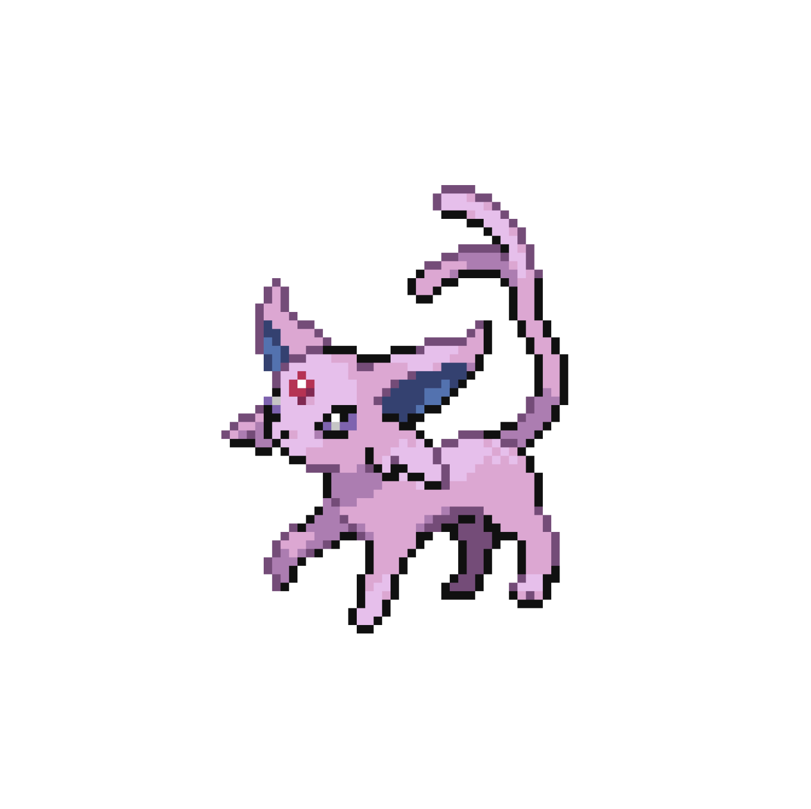
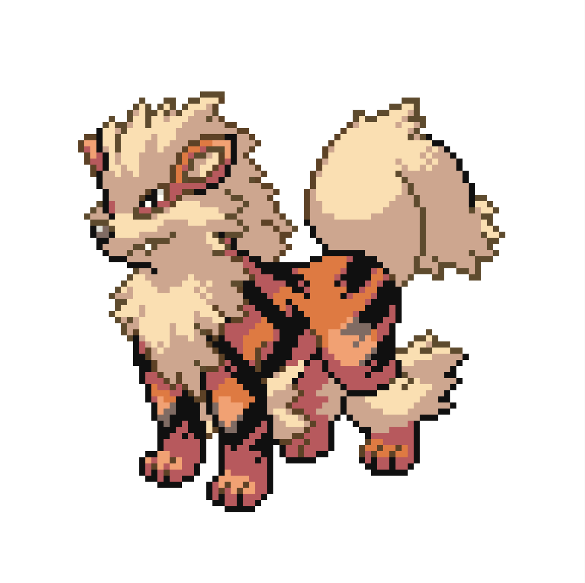
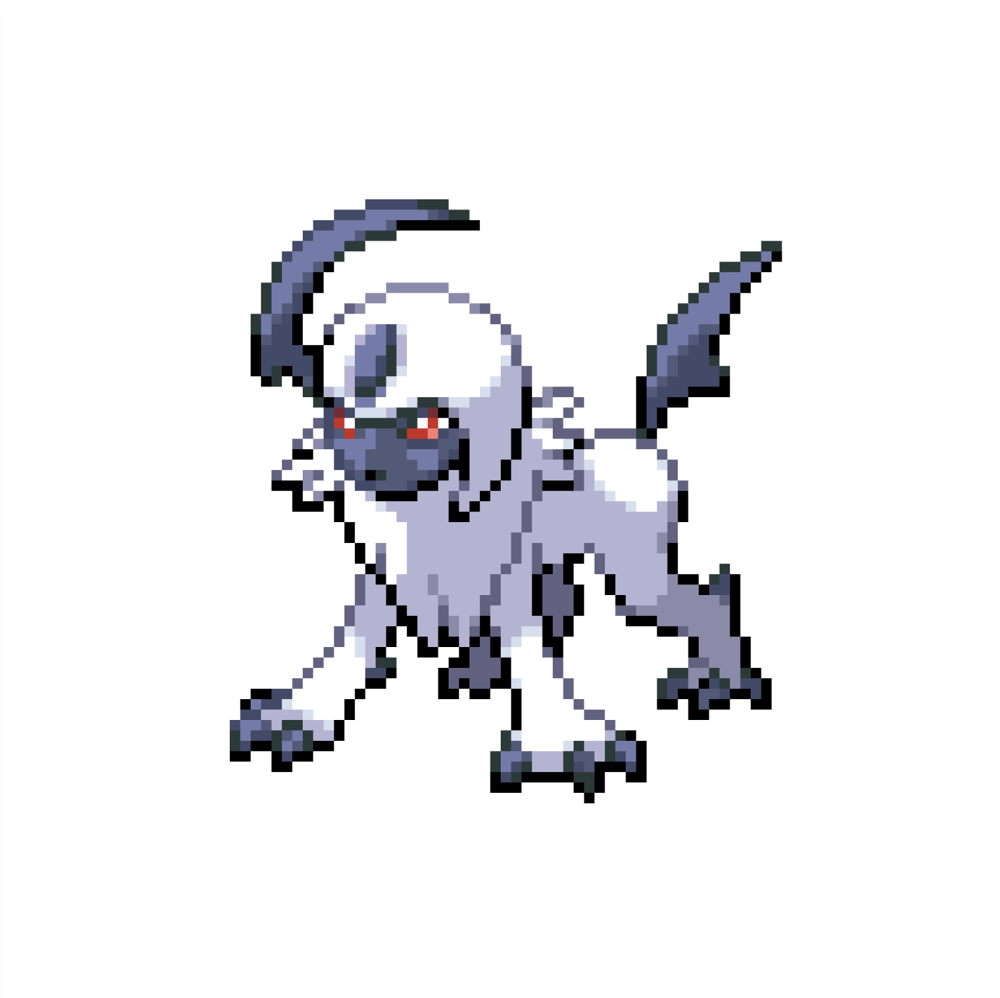
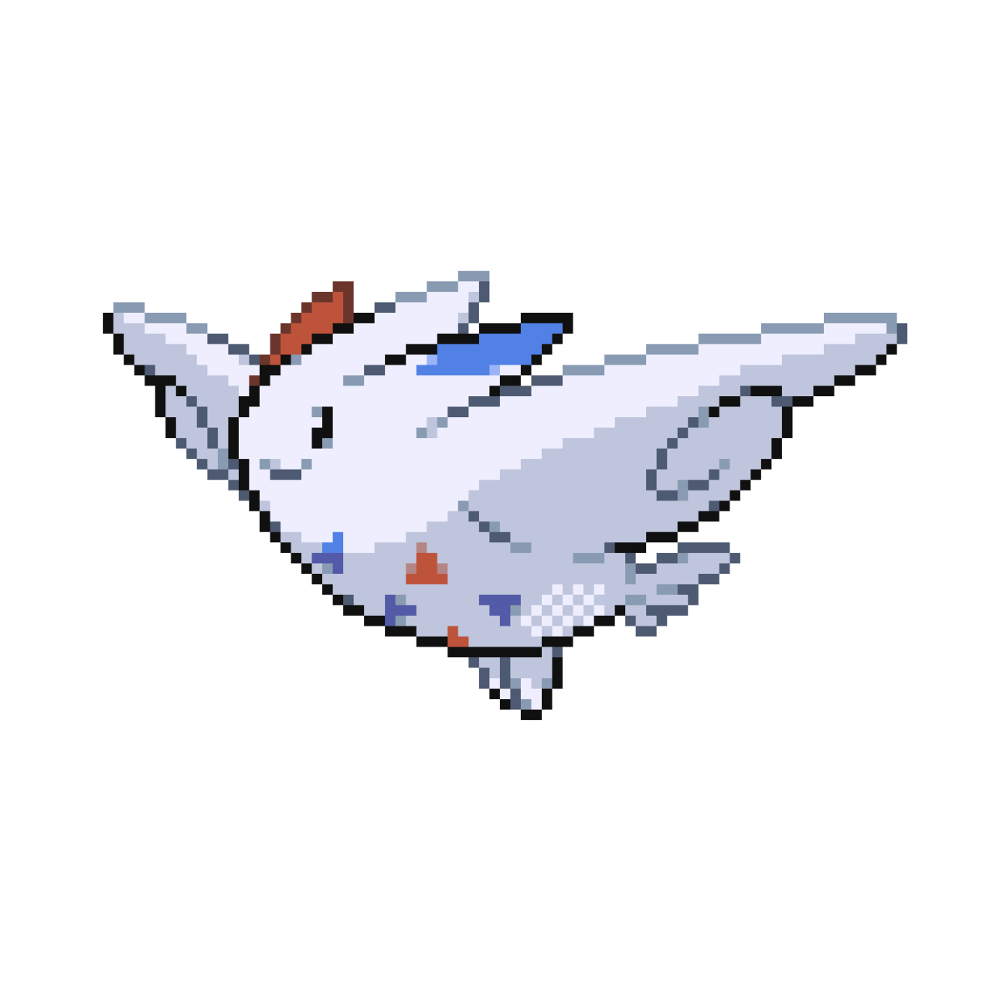
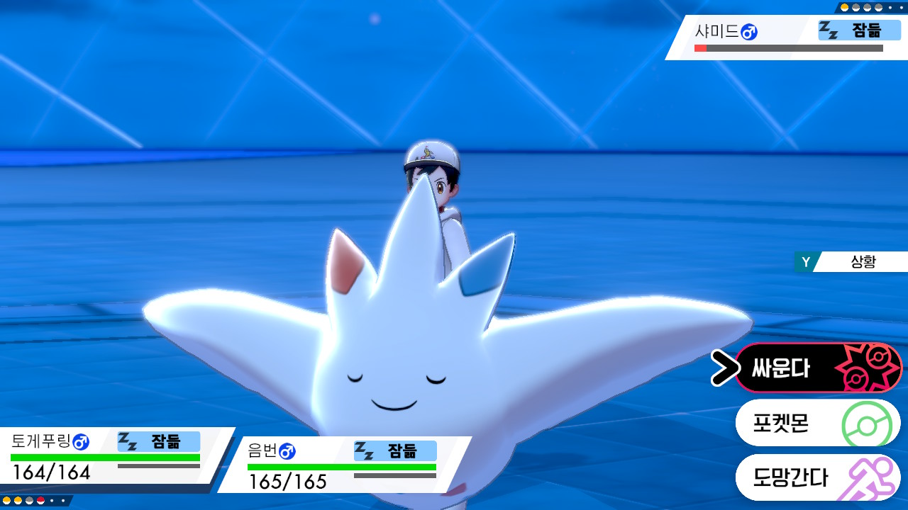
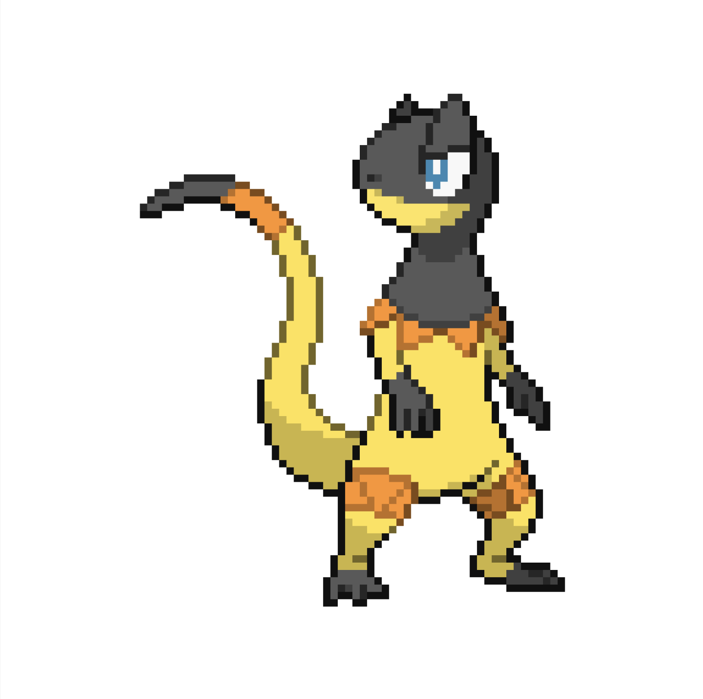
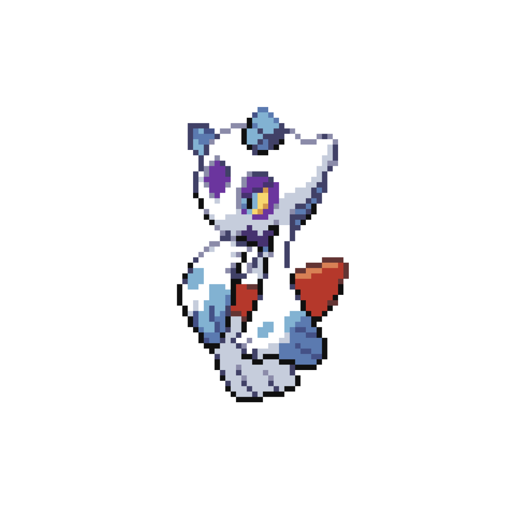

에브이
태양포켓몬
| 타입 | 에스퍼 |
| 특성 | 매직미러, 싱크로 |
| 기술 | 사이코키네시스, 방어, 리플렉터, 빛의장막, 매지컬샤인, 하이퍼보이스 |
| 도구 | 빛의 점토 |

윈디
전설포켓몬
| 타입 | 불꽃 |
| 특성 | 위협, 타오르는불꽃 |
| 기술 | 플레어드라이브, 인파이트, 신속, 구멍파기, 볼트체인지, 깨물어부수기 |
| 도구 | 생명의구슬 |

앱솔
재난포켓몬
| 타입 | 악 |
| 특성 | 프레셔, 대운 |
| 기술 | 속임수, 고스트다이브, 인파이트, 스톤엣지 |
| 도구 | 기합의띠 |

토게키스
축복포켓몬
| 타입 | 페어리, 비행 |
| 특성 | 하늘의은총 |
| 기술 | 에어슬래시, 하품, 트라이어택, 파동탄 |
| 도구 | 예리한부리 |


일레도리자드
발전포켓몬
| 타입 | 전기, 노말 |
| 특성 | 건조피부, 모래숨기 |
| 기술 | 파라볼라차지, 번개, 스톤샤워, 땅고르기 |
| 도구 | 자석 |

눈여아
설국포켓몬
| 타입 | 얼음, 고스트 |
| 특성 | 눈숨기, 저주받은바디 |
| 기술 | 눈보라, 병상첨병, 10만볼트, 도깨비불 |
| 도구 | 눈여아나이트, 자뭉열매 |
 닫기
닫기